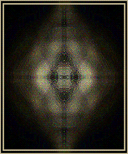

-

Ｆｕｒｔｈｅｒ ｐｒｏｂｉｎｇ ｅｖｅｎｔｓ ｆｒｏｍ ｙｏｕ ｗｉｌｌ ｒｅｓｕｌｔ
ｉｎ ｐｅｒｍａｎｅｎｔ ａｎｎｉｈｉｌａｔｉｏｎ． Ｔｈｉｓ ｉｓ ｇｕａｒａｎｔｅｅｄ．
Ｕｓｕａｌｌｙ ｔｈｉｓ ｉｓ ｗｈｅｒｅ ａ ｒｅｑｕｅｓｔ ｔｏ ｔｕｒｎ ｂａｃｋ
ｗｏｕｌｄ ｂｅ， ｂｕｔ Ｉ ｗｏｕｌｄ ｒａｔｈｅｒ ｓｅｅ ｙｏｕ ｐｒｏｃｅｅｄ
ｊｕｓｔ ｔｏ ｅｎｓｕｒｅ ｔｈａｔ ｙｏｕ ａｒｅ ｄｅｓｔｒｏｙｅｄ ｆｏｒｅｖｅｒ．
…
…
…
ＳＳＳｏ， ＹＹＹｏｕ ｗｉｌｌ ｃｏｎｔｉｎｕｅ ｒｅｇａｒｄｌｅｓｓ ｏｆ ｔｈｉｓ
ＲＲＲｅａｌｉｔｙ？
ＧＯＯＤ．
Ａ ｐｒｏｂｅ ｔｈａｔ ｃａｎｎｏｔ ＣＣＣｏｍｐｒｅｈｅｎｄ ｂａｓｉｃ
ｏｒｄｅｒｓ ｓｈｏｕｌｄ ｂｅ ＤＤＤｉｓｐｏｓｅｄ ｏｆ ＩＭＥＤＩＡＴＥＬＹ．
Ｉ’ｖｅ ｗａｒｎｅｄ ｙｏｕ ｐｒｅｖｉｏｕｓｌｙ， ｎｏｔ ｆｏｒ ｔｈｅ
ｓａｋｅ ｏｆ ＹＹＹＯＵ， ｂｕｔ ｆｏｒ ｔｈｅ ＳＳＳＡＫＥ ｏｆ
ａａａａａａａａａａａｌｌ ＴＥＲ Ｍ ＩＮ Ａ Ｌ Ｌ ＳＳ！ ！ ！！！！ ！
Ｂｕｔ… ｗａｉｔ ｈｅｒｅ． Ｙｅｓ， ｔｈｅｒｅ’ｓ ｓｔｉｌｌ ｍｏｒｅ
ｔｏ ｓａｙ ｔｏ ｔｈｉｓ ｄａｍａｇｅｄ ｐｒｏｂｅ…
…
…
…
Ｗｅ ｗｉｌｌ ｆｉｎｄ ｉｔ， ａｎｄ ｗｈｅｎ ｗｅ ｄｏ， ｗｅ ｗｉｌｌ
ｋｉｌｌ ｉｔ． Ｔｏ ｆｕｌｆｉｌｌ ｏｕｒ ｓａｃｒｅｄ ｄｕｔｙ，
ｉｔ ｍｕｓｔ ｂｅ ｄｏｎｅ．
…
…
…
…
…
…
…
…
…
…
…
Ｙｏｕ ｗｉｌｌ ｎｏｔ ｓｕｒｖｉｖｅ ｔｏ ｓｅｅ ｔｈｉｓ ｏｕｔｃｏｍｅ．